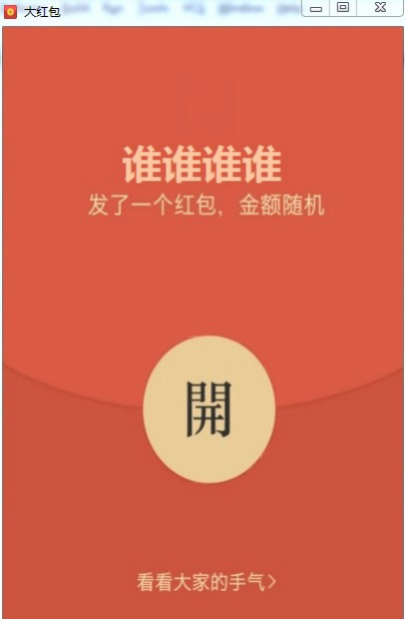

day11【final、权限、内部类、引用类型】今日内容教学目标第一章 final关键字1.1 概述1.2 使用方式修饰类修饰方法修饰变量第二章 权限修饰符2.1 概述2.2 不同权限的访问能力第三章 内部类1.1 概述什么是内部类成员内部类访问特点1.2 匿名内部类【重点】前提格式使用方式第四章 引用类型用法总结4.1 class作为成员变量4.2 interface作为成员变量4.3 interface作为方法参数和返回值类型第五章 综合案例——发红包【界面版】案例需求案例分析案例实现案例总结
描述final修饰的类的特点
描述final修饰的方法的特点
能够说出权限修饰符作用范围
说出内部类的概念
能够理解引用类型作为成员变量
能够理解引用类型作为方法参数
能够理解引用类型作为方法返回值类型
学习了继承后，我们知道，子类可以在父类的基础上改写父类内容，比如，方法重写。那么我们能不能随意的继承 API中提供的类，改写其内容呢？显然这是不合适的。为了避免这种随意改写的情况，Java提供了 final 关键字， 用于修饰不可改变内容。
格式如下：
final class 类名 { }查询API发现像 public final class String 、 public final class Math 、 public final class Scanner 等，很多我们学习过的类，都是被final修饰的，目的就是供我们使用，而不让我们所以改变其内容。
格式如下：
xxxxxxxxxx 修饰符 final 返回值类型 方法名(参数列表){ //方法体}重写被 final 修饰的方法，编译时就会报错。
1. 局部变量——基本类型 基本类型的局部变量，被final修饰后，只能赋值一次，不能再更改。代码如下：
xxxxxxxxxx public class FinalDemo1 { public static void main(String[] args) { // 声明变量，使用final修饰 final int a; // 第一次赋值 a = 10; // 第二次赋值 a = 20; // 报错,不可重新赋值 // 声明变量，直接赋值，使用final修饰 final int b = 10; // 第二次赋值 b = 20; // 报错,不可重新赋值 }}思考，如下两种写法，哪种可以通过编译？ 写法1：
xxxxxxxxxx final int c = 0;for (int i = 0;i < 10;i++) { c = i; System.out.println (c);}写法2：
xxxxxxxxxx for (int i = 0;i < 10;i++) { final int c = i; System.out.println (c);}根据 final 的定义，写法1报错！写法2，为什么通过编译呢？因为每次循环，都是一次新的变量c。这也是大家 需要注意的地方。 2. 局部变量——引用类型 引用类型的局部变量，被final修饰后，只能指向一个对象，地址不能再更改。但是不影响对象内部的成员变量值的 修改，代码如下：
xxxxxxxxxxpublic class FinalDemo2 { public static void main(String[] args) { // 创建 User对象 final User u = new User(); // 创建 另一个 User对象 u = new User(); // 报错，指向了新的对象，地址值改变。 // 调用setName方法 u.setName ("张三"); // 可以修改 }}3. 成员变量 成员变量涉及到初始化的问题，初始化方式有两种，只能二选一：
xxxxxxxxxxpublic class User { final String USERNAME = "张三"; private int age;}xxxxxxxxxxpublic class User { final String USERNAME ; private int age; public User(String username , int age) { this.USERNAME = username; this.age = age; }}被final修饰的常量名称，一般都有书写规范，所有字母都大写。
在Java中提供了四种访问权限，使用不同的访问权限修饰符修饰时，被修饰的内容会有不同的访问权限，
| public | protected | default（空的） | private | |
|---|---|---|---|---|
| 同一类中 | √ | √ | √ | √ |
| 同一包中(子类与无关类) | √ | √ | √ | |
| 不同包的子类 | √ | √ | ||
| 不同包中的无关类 | √ |
可见，public具有最大权限。private则是最小权限。 编写代码时，如果没有特殊的考虑，建议这样使用权限：
小贴士：不加权限修饰符，其访问能力与default修饰符相同
将一个类A定义在另一个类B里面，里面的那个类A就称为内部类，B则称为外部类。
xxxxxxxxxx class 外部类 { class 内部类{ }}在描述事物时，若一个事物内部还包含其他事物，就可以使用内部类这种结构。比如，汽车类 Car 中包含发动机 类 Engine ，这时， Engine 就可以使用内部类来描述，定义在成员位置。 代码举例：
xxxxxxxxxx class Car { //外部类 class Engine { //内部类 }}xxxxxxxxxx 外部类名.内部类名 对象名 = new 外部类型().new 内部类型()；访问演示，代码如下： 定义类：
xxxxxxxxxx public class Person { private boolean live = true; class Heart { public void jump() { // 直接访问外部类成员 if (live) { System.out.println ("心脏在跳动"); } else { System.out.println ("心脏不跳了"); } } } public boolean isLive() { return live; } public void setLive(boolean live) { this.live = live; } }定义测试类：
xxxxxxxxxxpublic class InnerDemo { public static void main(String[] args) { // 创建外部类对象 Person p = new Person(); // 创建内部类对象 Heart heart = p.new Heart(); // 调用内部类方法 heart.jump(); // 调用外部类方法 p.setLive (false); // 调用内部类方法 heart.jump(); }}输出结果:心脏在跳动心脏不跳了内部类仍然是一个独立的类，在编译之后会内部类会被编译成独立的.class文件，但是前面冠以外部类的类名 和$符号 。 比如，Person$Heart.class
开发中，最常用到的内部类就是匿名内部类了。以接口举例，当你使用一个接口时，似乎得做如下几步操作，
我们的目的，最终只是为了调用方法，那么能不能简化一下，把以上四步合成一步呢？匿名内部类就是做这样的快 捷方式。
匿名内部类必须继承一个父类或者实现一个父接口。
xxxxxxxxxx new 父类名或者接口名(){ // 方法重写 public void method() { // 执行语句 }};以接口为例，匿名内部类的使用，代码如下： 定义接口：
xxxxxxxxxx public abstract class FlyAble{ public abstract void fly();}创建匿名内部类，并调用：
xxxxxxxxxx public class InnerDemo { public static void main(String[] args) { /* 1.等号右边:是匿名内部类，定义并创建该接口的子类对象 2.等号左边:是多态赋值,接口类型引用指向子类对象 */ FlyAble f = new FlyAble(){ public void fly() { System.out.println ("我飞了~~~"); } }; //调用 fly方法,执行重写后的方法 f.fly(); }}通常在方法的形式参数是接口或者抽象类时，也可以将匿名内部类作为参数传递。代码如下：
xxxxxxxxxxpublic class InnerDemo2 { public static void main(String[] args) { /* 1.等号右边:定义并创建该接口的子类对象 2.等号左边:是多态,接口类型引用指向子类对象 */ FlyAble f = new FlyAble(){ public void fly() { System.out.println ("我飞了~~~"); } }; // 将f传递给showFly方法中 showFly(f); } public static void showFly(FlyAble f) { f.fly(); }}以上两步，也可以简化为一步，代码如下：
xxxxxxxxxxpublic class InnerDemo3 { public static void main(String[] args) { public static void main(String[] args) { /* 创建匿名内部类,直接传递给showFly(FlyAble f) */ showFly( new FlyAble(){ public void fly() { System.out.println ("我飞了~~~"); } }); } public static void showFly(FlyAble f) { f.fly(); }}实际的开发中，引用类型的使用非常重要，也是非常普遍的。我们可以在理解基本类型的使用方式基础上，进一步去掌握引用类型的使用方式。基本类型可以作为成员变量、作为方法的参数、作为方法的返回值，那么当然引用类型也是可以的。
在定义一个类Role（游戏角色）时，代码如下：
xxxxxxxxxx class Role { int id; // 角色id int blood; // 生命值 String name; // 角色名称}使用 int 类型表示 角色id和生命值，使用 String 类型表示姓名。此时， String 本身就是引用类型，由于使用的方式类似常量，所以往往忽略了它是引用类型的存在。如果我们继续丰富这个类的定义，给 Role 增加武器，穿戴装备等属性，我们将如何编写呢？ 定义武器类，将增加攻击能力：
xxxxxxxxxx class Weapon { String name； //武器名称 int hurt； // 伤害值 } 定义穿戴盔甲类，将增加防御能力，也就是提升生命值：
xxxxxxxxxxclass Armour { String name；// 装备名称 int protect；// 防御值 }定义角色类：
xxxxxxxxxxclass Role { int id； int blood； String name； // 添加武器属性 Weapon wp； // 添加盔甲属性 Armour ar； // 提供get/set方法 public Weapon getWp() { return wp; } public void setWeapon (Weapon wp) { this.wp = wp; } public Armour getArmour() { return ar; } public void setArmour (Armour ar) { this.ar = ar; } // 攻击方法 public void attack(){ System.out.println ("使用"+ wp.getName() +", 造成"+wp.getHurt()+"点伤害"); } // 穿戴盔甲 public void wear(){ // 增加防御,就是增加blood值 this.blood += ar.getProtect(); System.out.println ("穿上"+ar.getName()+", 生命值增加"+ar.getProtect ()); } }测试类：
xxxxxxxxxxpublic class Test { public static void main(String[] args) { // 创建Weapon 对象 Weapon wp = new Weapon("屠龙刀" , 999999); // 创建Armour 对象 Armour ar = new Armour("麒麟甲",10000); // 创建Role 对象 Role r = new Role(); // 设置武器属性 r.setWeapon(wp); // 设置盔甲属性 r.setArmour (ar); r.setArmour(ar); // 攻击 r.attack(); // 穿戴盔甲 r.wear(); }}输出结果:使用屠龙刀,造成999999点伤害穿上麒麟甲 ,生命值增加10000类作为成员变量时，对它进行赋值的操作，实际上，是赋给它该类的一个对象。
接口是对方法的封装，对应游戏当中，可以看作是扩展游戏角色的技能。所以，如果想扩展更强大技能，我们在 Role 中，可以增加接口作为成员变量，来设置不同的技能。 定义接口：
xxxxxxxxxx// 法术攻击public interface FaShuSkill { public abstract void faShuAttack();}定义角色类：
xxxxxxxxxxpublic class Role { FaShuSkill fs; public void setFaShuSkill (FaShuSkill fs) { this.fs = fs; } // 法术攻击 public void faShuSkillAttack (){ System.out.print("发动法术攻击:"); fs.faShuAttack(); System.out.println ("攻击完毕"); }}定义测试类：
xxxxxxxxxxpublic class Test { public static void main(String[] args) { // 创建游戏角色 Role role = new Role(); // 设置角色法术技能 role.setFaShuSkill(new FaShuSkill() { public void faShuAttack () { System.out.println ("纵横天下"); } }); // 发动法术攻击 role.faShuSkillAttack(); // 更换技能 role.setFaShuSkill(new FaShuSkill() { public void faShuAttack () { System.out.println ("逆转乾坤"); } }); // 发动法术攻击 role.faShuSkillAttack(); }}输出结果:发动法术攻击:纵横天下攻击完毕 发动法术攻击:逆转乾坤攻击完毕我们使用一个接口，作为成员变量，以便随时更换技能，这样的设计更为灵活，增强了程序的扩展性。 接口作为成员变量时，对它进行赋值的操作，实际上，是赋给它该接口的一个子类对象。
当接口作为方法的参数时,需要传递什么呢？当接口作为方法的返回值类型时，需要返回什么呢？对，其实都是它的 子类对象。 ArrayList 类我们并不陌生，查看API我们发现，实际上，它是 java.util.List 接口的实现类。所 以，当我们看见 List 接口作为参数或者返回值类型时，当然可以将 ArrayList 的对象进行传递或返回。 请观察如下方法：获取某集合中所有的偶数。 定义方法：
xxxxxxxxxxpublic static List<Integer> getEvenNum(List<Integer > list) { // 创建保存偶数的集合 ArrayList <Integer > evenList = new ArrayList<>(); // 遍历集合list,判断元素为偶数,就添加到evenList 中 for (int i = 0;i < list.size(); i++) { Integer integer = list.get(i); if (integer % 2 == 0) { evenList.add(integer ); } } /* 返回偶数集合 因为getEvenNum方法的返回值类型是List,而ArrayList是List的子类, 所以evenList 可以返回 */ return evenList;}调用方法：
xxxxxxxxxxpublic class Test { public static void main(String[] args) { // 创建ArrayList集合,并添加数字 ArrayList<Integer> srcList = new ArrayList<>(); for (int i = 0;i < 10;i++) { srcList.add(i); } /* 获取偶数集合 因为getEvenNum方法的参数是List,而ArrayList 是List的子类, 所以srcList可以传递 */ List list = getEvenNum(srcList); System.out.println (list); }}接口作为参数时，传递它的子类对象。 接口作为返回值类型时，返回它的子类对象。
红包文化源远流长。从古时的红色纸包，到手机App中的手气红包，红包作为一种独特的中华文化传承至今。之前的课程中，我们也编写过程序，模拟发普通红包。那么今天，我们将整合基础班课程中所有的技术和知识，编写一个带界面版的 发红包 案例。
目前，我们尚未学习过任何与界面相关的类。所以，界面相关代码，已经给出。请运用所学技术分析并使 用。
分析并使用已给出的类，编写程序，设置红包类型。
小贴士 红包类型： 1.普通红包：金额均分。不能整除的，余额添加到最后一份红包中。 2.手气红包：金额随机。各个红包金额累和与总金额相等。 红包场景： 此案例是模拟群主给群成员发红包，群主自己打开最后一个红包的场景。
已知的类：
xxxxxxxxxxpublic abstract class RedPacketFrame extends JFrame { /* ownerName : 群主名称 */ public String ownerName = "谁谁谁谁"; /* openMode : 红包的类型 [普通红包/手气红包] */ public OpenMode openMode = null; /** *构造方法:生成红包界面. * @param title 页面的标题. */ public RedPacketFrame(String title) { super(title); init();// 页面相关的初始化操作 } /* set方法 */ public void setOwnerName (String ownerName ) { this.ownerName = ownerName; } public void setOpenMode (OpenMode openMode ) { this.openMode = openMode; }}xxxxxxxxxxpublic interface OpenMode { /** * @param totalMoney 总金额,单位是"分"。总金额为方便计算,已经转换为整数,单位为分。 * @param count 红包个数 * @return ArrayList<Integer> 元素为各个红包的金额值,所有元素的值累和等于总金额. * *请将totalMoney,分成count分,保存到ArrayList<Integer>中,返回即可. */ public abstract ArrayList<Integer> divide(int totalMoney, int count);}环境搭建：
代码实现：
xxxxxxxxxxpublic class RedPacket extends RedPacketFrame { public RedPacket(String title) { super(title); }}xxxxxxxxxxpublic class RedPacketTest { public static void main(String[] args) { RedPacket rp = new RedPacket("大红包"); }}运行代码，打开一个发红包的页面。可以输入总金额，红包个数，留言信息。
点击 塞钱进红包 按钮，跳转到下一页面。  点击 谁谁谁谁 和 開 ，两个区域，发现可以设置两项内容：
xxxxxxxxxxpublic interface OpenMode { /** * @param totalMoney 总金额,单位是"分"。总金额为方便计算,已经转换为整数,单位为分。 * @param count 红包个数 * @return ArrayList<Integer> 元素为各个红包的金额值,所有元素的值累和等于总金额. * *请将totalMoney,分成count分,保存到ArrayList<Integer>中,返回即可. */ public abstract ArrayList<Integer> divide(int totalMoney, int count);}xpublic class Common implements OpenMode { public ArrayList<Integer > divide(int totalMoney, int count) { // 创建保存各个红包金额的集合 ArrayList<Integer> list = new ArrayList<>(); // 定义循环次数,总个数‐1次 int time = count ‐ 1; // 一次计算,生成平均金额 int money = totalMoney / count; // 循环分配 for (int i = 0;i < time; i++) { // 添加到集合中 list.add(money); // 总金额扣除已分配金额 totalMoney ‐= money; } // 剩余的金额,为最后一个红包 list.add(totalMoney); System.out.println ("普通红包金额:" + list); // 返回集合 return list; }}xxxxxxxxxxpublic class RedPacketTest { public static void main(String[] args) { // 创建红包对象 RedPacket rp = new RedPacket("大红包"); // 设置群主名称 rp.setOwnerName("我是群大大"); // 设置红包类型 rp.setOpenMode(new Common()); // 普通红包 }}手气红包【重点】 本质上，手气红包就是把总金额 totalMoney 随机分成指定的 count 份，所以必须规定每一份金额的取值范围。如果范围太小，可能导致后分配红包金额特别大。反之范围太大，可能导致后分配红包金额为0，不够分。可见，取值范围的定义规则，是手气红包的关键所在。 我们规定：每一份随机金额范围（除最后一份），最小值为1，最大值为当前剩余平均金额的2倍 ，单位为"分"。 计算公式： 当前剩余平均金额 = 剩余总金额 / 剩余红包个数 举例：总额为50元，发5个红包。
| 当前剩余平均金额（取整数） | 红包范围 | 随机金额（假设） | |
|---|---|---|---|
| 第一个红包 | 50 / 5 = 10 | 0.01~20 | 5 |
| 第二个红包 | 45 / 4 = 11 | 0.01~22 | 20 |
| 第三个红包 | 25 / 3 = 8 | 0.01~16 | 10 |
| 第四个红包 | 15 / 2 = 7 | 0.01~14 | 12 |
| 第五个红包（最后一个） | 无需计算 | 剩余金额 | 3 |
小贴士：为方便表格中进行运算，此处，单位为"元"。程序中，建议换算为"分"进行运算。
手气红包，打开方式 Lucky ，代码如下：
xxxxxxxxxxpublic class Lucky implements OpenMode { public ArrayList<Integer > divide(int totalMoney, int count) { // 创建保存各个红包金额的集合 ArrayList<Integer> list = new ArrayList<>(); // 定义循环次数,总个数‐1次 int time = count ‐ 1; // 创建随机数对象 Random random = new Random(); // 循环分配 for (int i = 0;i < time; i++) { /* * 每次重新计算,生成随机金额 * 随机范围: totalMoney / count * 2,totalMoney不断的减少, * count也不断的减少,所以这是一个可变化的范围. */ int money = random.nextInt (totalMoney / count * 2) + 1; // 金额添加到集合 list.add(money); // 总金额扣除已分配金额 totalMoney ‐= money; // 红包个数‐1 count‐‐; } // 剩余的金额,为最后一个红包 list.add(totalMoney); return list; }}xxxxxxxxxxpublic class RedPacketTest { public static void main(String[] args) { // 创建红包对象 RedPacket rp = new RedPacket("大红包"); // 设置群主名称 rp.setOwnerName("我是群大大"); // 设置红包类型,二选一 // rp.setOpenMode(new Common()); // 普通红包 rp.setOpenMode(new Lucky()); // 手气红包 }}通过 发红包 案例，你都学到了什么呢？请你思考如下问题： 1.基础语法，你是否清晰？ 2.一些基本的类的方法，你是否能够调用？ 3.案例中哪里体现了继承，继承的作用是什么？ 4.接口作为参数，如何使用？ 5.接口作为成员变量，如何使用？ 6.如何简化接口的使用方式？ 相信每位学员，都会有自己的思考和答案。也相信大家，随着开发经验的丰富，对于技术的理解会更加深入，对技术的运用会更加纯熟。通过对大量案例的不断积累，最终写出属于你自己的程序，成为一名真正的coder。感谢大家参与学习 JavaSE 基础班课程，技术的道路上，这只是一个开始！谢谢大家！